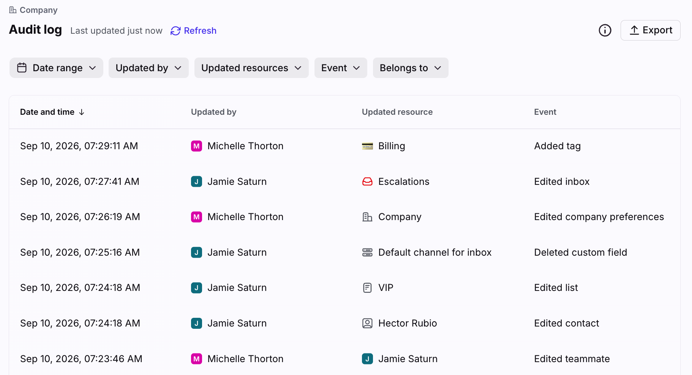
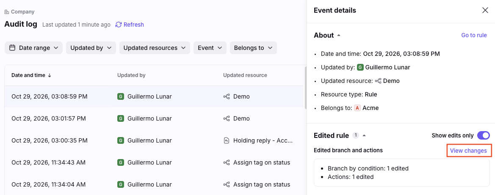
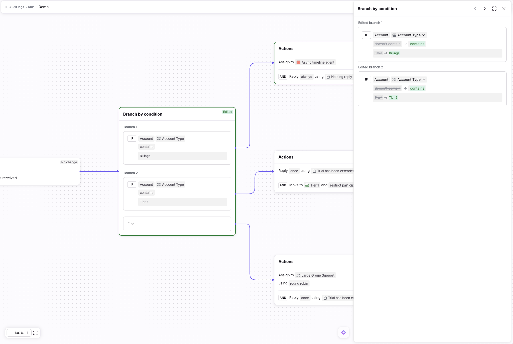

Context
A record of every admin change
Front is a shared inbox for customer-facing teams. Admins automate it with rules. A linear rule reads as when this happens, if these conditions are met, then do this. A branching rule adds decision points: one trigger, then branches that each check their own conditions and lead to different actions, like a flowchart. A single rule can send VIP customers to one team, open tickets to another and everything else to a default.
The audit log answers the questions admins ask when something breaks: who deleted this inbox, who changed this rule. Each event shows when it happened, who made it, the resource and the type of change.

The problem
The diff was a list. Branching rules are trees.
The existing diff lived only in the event side panel, as a static list of fields with old and new values. It worked for linear rules, but a branching rule doesn't fit a list: edits spread across nested branches, branches have no names or numbers, and the same edit means something different depending on where it sits. To understand one change, admins had to rebuild the tree in their heads.
The pressure was growing. Changes now came from teammates, the API, apps and Front's Admin Copilot (🔒 Confidential 973 resources built in its first months), so admins had to check changes nobody made by hand. Three situations came up again and again:
After an incident.
VIP conversations stop reaching the right team. Which branch changed, who changed it, and what did it say before?
After delegating.
A team lead can now edit rules. The company admin wants to check what changed without asking.
After Admin Copilot builds a rule.
The admin wants to verify what the AI created before trusting it.
In every case the ask was the same: tell me what changed, as fast as possible, and show me where.
Linear rule
Branching rule
Key decisions
Test three directions with customers
- Starting point
- the diff existed only as a list in the side panel.
- What we tried
- three options — load the whole branching diff into the side panel, like the current pattern; show the old and new rule side by side; or preview the rule interactively, following the rule editor's design.
- What we learned
- in 5 calls with large customers, admins said two things: they wanted to see the whole rule, not only the changed fields, and they wanted to land on the changes right away. The panel couldn't show nesting and turned into clutter on large rules; side by side made them hunt for differences across two trees.
- What shipped
- the interactive previewer.
Side panel
Side by side
Interactive previewer Shipped
Turn the diff into a system, not a screen
The old diff was a one-off pattern inside one panel. I broke it into reusable components and states so it could work on any resource and any surface:
- Four states: added, edited, deleted and no change, each with its own badge and color.
- Value changes: removed in red strikethrough, new in green, simple swaps inline (Order 3 → 5).
- Counters per section and per node, so admins see how much changed before reading.
- Context rules: unchanged content is dimmed, not hidden; deleted content keeps its colors at 50% opacity so it still reads.
Why: one grammar means admins learn to read change once. The same system covers the 7 new resource types in audit log v3 (macros, message templates, signatures, contacts and more).
States
Value changes
Counters
Context rules
From a static panel to an interactive previewer
The panel keeps a one-line summary per node type ("Branch by condition: 1 edited") and a View changes link. That link opens the rule drawn as admins see it in the editor, with every change marked on its node.
Why: admins don't think in lists of fields; they think in the shape of their rule. Seeing the change in place answers where without any mental reconstruction, and because it looks like the editor, there's nothing new to learn.

Every node carries its state, and you can jump between them
Clicking an edited node opens its before → after, branch by branch. Chevrons jump only between modified nodes, so admins never scan the whole tree. Deleted nodes are struck through and view-only, with a tooltip explaining why. One Show edits only toggle controls the whole page instead of one per node.
Why: it answers both needs from the calls at once: the full rule stays visible as context, and the shortest path goes straight to what changed.

Nodes are clickable
Click an edited or added node to open its detail panel on the right.
What the badge means
Every node carries Edited, Added, Deleted or No change in its top-right corner.
Deleted nodes are view-only
They are struck through and cannot be clicked. The cursor turns to “not allowed” and a tooltip explains why.
Deleted content stays coloured
Icons, emojis and tags inside a deleted node stay in their original colour at 50% opacity, so they read as disabled.
System and handoff
I reused what already existed (Rule Tester interactions, the rule editor header and the diff colors), which kept the previewer buildable in one quarter. The spec covered the cases that break trees: branches reordered with no edits, changes only in the trigger, an Autopilot branch switching question type, and connector changes. I walked engineering through it and joined QA on both milestones.
Impact
Audit log adoption among admins grew 35% across the new resource types. Admins of enterprise accounts can now answer "who changed this, and where?" inside a branching rule without opening a support ticket. [Customer quote or support-ticket data]
Looking back
The risk was designing a new diff just for trees. The better answer was turning the old one into a system, so it could grow from a side panel into an interactive previewer.